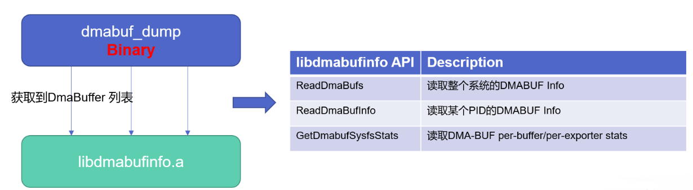
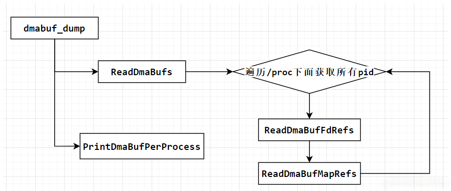
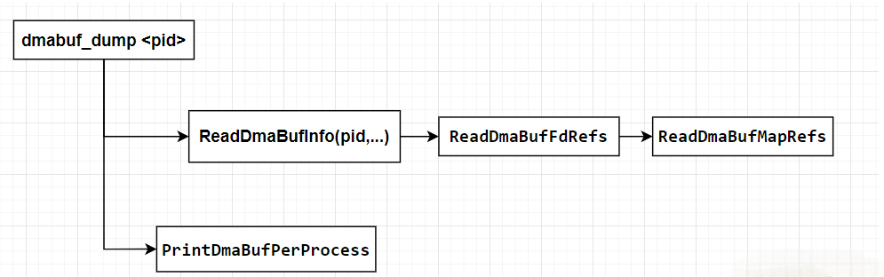
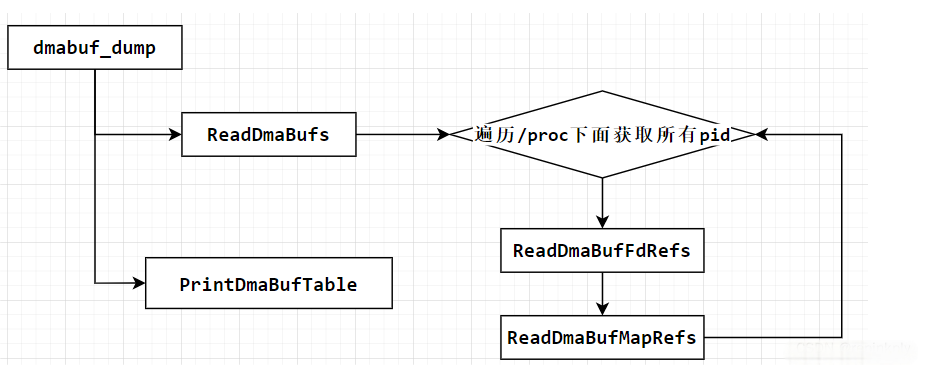
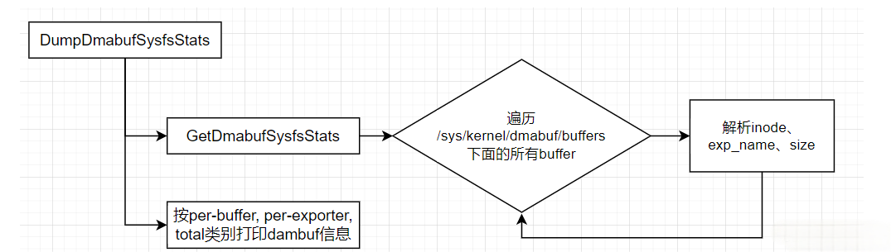
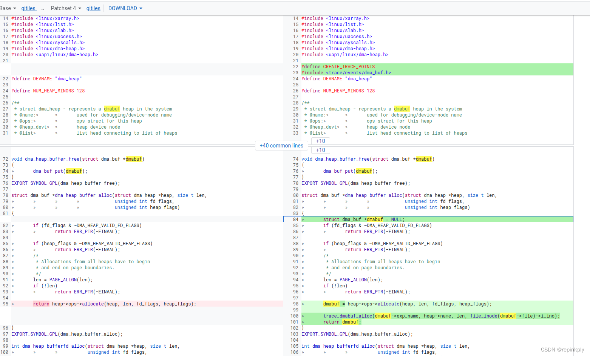

dmabuf_dump 详解
概述
DMA-BUF是Direct Memory Access Buffer的缩写，是Linux内核中的一个独立子系统。它的主要目的是提供一个框架，使得不同设备、子系统之间可以共享缓存。在多设备交互的场景下，这种共享缓存的方式可以大大提高数据传输的效率。在传统的设备间通信中，数据通常需要通过CPU进行中转，这不仅增加了CPU的负担，而且可能导致数据传输效率低下。DMA-BUF的出现，使得设备可以直接读写共享的内存区域，从而避免了不必要的CPU中转，减少了CPU或外设访问内存的开销。
DMA-BUF子系统包含三个主要组成部分：dma-buf对象、fence对象和reservation对象。
- dma-buf对象代表一个共享的内存区域，它提供了对这块内存的读写操作。这个对象通过文件描述符的形式暴露给应用层，使得应用可以通过文件操作来访问dma-buf。
- fence对象提供了一种机制，用于通知某个设备已经完成了对共享内存的访问。这可以确保数据的一致性和避免数据冲突。
- reservation对象则负责管理缓存的共享和互斥访问。它确保了在同一时间只有一个设备能够访问共享内存，避免了数据冲突。
DMA-BUF框架还实现了一个基于文件的DMA-BUF文件系统，可以直接通过挂载接口挂载到内核中。每个dma-buf实例（可以理解为已分配的每一块DMA Buffer）都会在文件系统中创建一个inode和file，并将文件描述符返回给调用者。调用者可以通过文件操作（如ioctrl、map等）来对dma-buf进行读写操作。这种设计使得不同的驱动可以通过文件描述符来共享和访问同一缓存区。
DMA-BUF的应用场景非常广泛。最初，DMA-BUF机制主要用于支持GPU驱动中的prime机制，但随着其通用性的增强，现在已广泛应用于各种需要设备间高速数据传输的场景，如摄像头采集、GPU内部管理内存等。通过DMA-BUF，不同的设备或子系统可以更高效地交互和传输数据，提高了系统的整体性能。
在Android Camera中，几乎所有图像相关的Buffer都是来源于DMA-buf。例如预览/拍照时，从上层传下来的装载图像数据的Gralloc Buffer；MTK/Qcom hal层中，缓存sensor图像数据的ImageBuffer，各个算法节点之间的中转ImageBuffer。
而dmabuf_dump是用于调试或者查看系统中分配的 dma-buf 相关信息的工具，其一般已经内置在Android系统中，是相机内存分析中最常用的工具之一。
源码
工具源码：
https://xrefandroid.com/android-14.0.0_r21/xref/system/memory/libmeminfo/libdmabufinfo/
https://xrefandroid.com/android-14.0.0_r21/xref/system/memory/libmeminfo/libdmabufinfo/tools/
整体架构结构如下

功能
dmabuf_dump主要包含以下功能
- Dump整个系统DMA-BUF per-buffer, per-exporter and per-device statistics(dmabuf_dump -b)，在kernel版本>= 5.10上生效。
- Dump整个系统的dmabuf info (dmabuf_dump)
- Dump某个PID的dmabuf info (dmabuf_dump )
- 以Table[buffer x process]方式呈现dmabuf info (dmabuf_dump -a)
使用方法
dmabuf_dump 一般已经内置于Android系统中（没有就自己用源码编译一个）。
Dump某个进程的dmabuf
- 指令：
1
adb shell dmabuf_dump <PID>
- 输出：
下面Dump Camera Provider进程的dmabuf使用情况。上述dump说明：1
2
3
4
5
6
7
8
9
10
11
12
13
14
15
16
17
18
19
20
21
22
23
24
25vendor.qti.came:1601
Name Rss Pss nr_procs Inode
system 4 kB 4 kB 1 134
system 4 kB 4 kB 1 135
system 4 kB 4 kB 1 723
system 4 kB 4 kB 1 724
system 4 kB 4 kB 1 725
system 4320 kB 4320 kB 1 727
system 736 kB 736 kB 1 729
system 148 kB 148 kB 1 731
system 32768 kB 32768 kB 1 733
system 4 kB 4 kB 1 996
system 4 kB 4 kB 1 1010
system 4 kB 4 kB 1 1011
system 736 kB 736 kB 1 1017
system 148 kB 148 kB 1 1019
system 6848 kB 6848 kB 1 1342
system 1024 kB 1024 kB 1 1359
system 32768 kB 32768 kB 1 1363
system 4 kB 4 kB 1 1367
system 4 kB 4 kB 1 1371
system 4 kB 4 kB 1 1372
PROCESS TOTAL 79540 kB 79540 kB
----------------------
dmabuf total: 298652 kB kernel_rss: 219112 kB userspace_rss: 79540 kB userspace_pss: 79540 kB
1601：是目标进程的PID，vendor.qti.came是进程的名字，来源于:Rss：是当前段实际加载到物理内存中的大小。1
/proc/PID/comm
Pss：进程按比例分配当前段所占物理内存的大小。
nr_procs：有多少个进程在使用这块dmabuf。
Name：dmabuf的名字，可以通过ioctl进行修改。
Inode：这块 dmabuf 的唯一标识，注意Inode是全局唯一的。
PROCESS TOTAL：统计 Rss 或者 Pss的总和。
dmabuf total：整个系统dambuf的总和
userspace_rss：用户空间 rss的总和。
userspace_pss：用户空间 pss的总和。
kernel_rss：内核空间rss的总和。
Dump整个手机系统的dmabuf
- 指令：
1
adb shell dmabuf_dump
- 输出：
1
2
3
4
5
6
7
8
9
10
11
12
13
14
15
16
17
18
19
20
21
22
23
24
25
26
27
28
29
30
31
32
33
34
35
36
37
38
39
40
41
42
43
44
45
46
47
48
49
50
51
52
53
54
55
56
57
58
59
60
61
62
63
64
65
66
67
68
69
70
71
72
73
74
75
76
77
78
79
80
81
82
83
84
85
86
87
88
89
90
91
92
93
94
95
96
97
98
99
100
101
102
103
104
105
106
107
108
109
110
111
112
113
114
115
116
117
118
119
120
121
122
123
124
125
126
127
128
129
130
131
132
133
134
135
136
137
138
139
140
141
142
143
144
145
146
147
148
149
150
151
152
153
154
155
156
157
158
159
160
161
162
163
164
165
166
167
168
169
170
171
172
173
174
175
176
177
178
179
180
181
182
183
184
185
186
187
188
189
190
191
192
193
194
195
196
197
198
199
200
201
202
203
204
205
206
207
208
209
210
211
212
213
214
215
216
217
218
219
220
221
222
223
224
225
226
227
228
229
230
231
232
233
234
235
236
237
238
239
240
241
242
243
244
245
246
247
248
249
250
251
252
253
254
255
256
257
258
259
260
261
262
263
264
265
266
267
268
269
270
271
272
273
274
275
276
277
278
279
280
281
282
283
284
285
286
287
288
289
290
291
292
293
294
295
296
297
298
299
300binder:3072_2:3072
Name Rss Pss nr_procs Inode
qcom,qseecom 12 kB 12 kB 1 160
PROCESS TOTAL 12 kB 12 kB
----------------------
mfp-daemon:3041
Name Rss Pss nr_procs Inode
qcom,qseecom 4 kB 4 kB 1 163
qcom,qseecom 2048 kB 2048 kB 1 164
PROCESS TOTAL 2052 kB 2052 kB
----------------------
cdsprpcd:2824
Name Rss Pss nr_procs Inode
system 4 kB 4 kB 1 139
system 256 kB 256 kB 1 141
system 104 kB 104 kB 1 1994
PROCESS TOTAL 364 kB 364 kB
----------------------
binder:1817_2:1817
Name Rss Pss nr_procs Inode
qcom,qseecom 8 kB 8 kB 1 37
PROCESS TOTAL 8 kB 8 kB
----------------------
.android.camera:8920
Name Rss Pss nr_procs Inode
system 4 kB 4 kB 1 1979
system 4 kB 4 kB 1 1987
system 4 kB 4 kB 1 1988
system 6848 kB 6848 kB 1 1990
system 736 kB 736 kB 1 1993
system 148 kB 148 kB 1 1996
system 32768 kB 32768 kB 1 1997
system 4 kB 4 kB 1 2000
system 4 kB 4 kB 1 2001
system 4 kB 4 kB 1 2002
qcom,system 2392 kB 2392 kB 1 2415
qcom,system 72 kB 72 kB 1 2416
qcom,system 2448 kB 2448 kB 1 2636
qcom,system 72 kB 72 kB 1 2637
PROCESS TOTAL 45508 kB 45508 kB
----------------------
iui.miwallpaper:4872
Name Rss Pss nr_procs Inode
qcom,system 10276 kB 5138 kB 2 3711
qcom,system 32 kB 16 kB 2 3712
qcom,system 10276 kB 5138 kB 2 3723
qcom,system 32 kB 16 kB 2 3724
PROCESS TOTAL 20616 kB 10308 kB
----------------------
fidoca:1813
Name Rss Pss nr_procs Inode
qcom,qseecom 24 kB 24 kB 1 25
PROCESS TOTAL 24 kB 24 kB
----------------------
binder:1808_2:1808
Name Rss Pss nr_procs Inode
system 4 kB 4 kB 1 43
system 4 kB 4 kB 1 44
PROCESS TOTAL 8 kB 8 kB
----------------------
binder:3079_2:3079
Name Rss Pss nr_procs Inode
qcom,system 14400 kB 14400 kB 1 165
qcom,system 32 kB 32 kB 1 166
PROCESS TOTAL 14432 kB 14432 kB
----------------------
android.hardwar:1607
Name Rss Pss nr_procs Inode
qcom,qseecom 4 kB 4 kB 1 22
PROCESS TOTAL 4 kB 4 kB
----------------------
surfaceflinger:1929
Name Rss Pss nr_procs Inode
qcom,system 64 kB 64 kB 1 71
qcom,system 32 kB 32 kB 1 72
qcom,system 10276 kB 5138 kB 2 133
qcom,system 32 kB 16 kB 2 134
qcom,system 384 kB 192 kB 2 225
qcom,system 32 kB 16 kB 2 226
qcom,system 384 kB 192 kB 2 227
qcom,system 32 kB 16 kB 2 228
qcom,system 384 kB 192 kB 2 229
qcom,system 32 kB 16 kB 2 230
qcom,system 384 kB 192 kB 2 231
qcom,system 32 kB 16 kB 2 232
qcom,system 344 kB 172 kB 2 247
qcom,system 32 kB 16 kB 2 248
qcom,system 952 kB 476 kB 2 292
qcom,system 32 kB 16 kB 2 293
qcom,system 952 kB 476 kB 2 298
qcom,system 32 kB 16 kB 2 299
qcom,system 952 kB 476 kB 2 302
qcom,system 32 kB 16 kB 2 303
qcom,system 952 kB 476 kB 2 304
qcom,system 32 kB 16 kB 2 305
qcom,system 952 kB 476 kB 2 308
qcom,system 32 kB 16 kB 2 309
qcom,system 952 kB 476 kB 2 310
qcom,system 32 kB 16 kB 2 311
qcom,system 952 kB 476 kB 2 312
qcom,system 32 kB 16 kB 2 313
qcom,system 952 kB 476 kB 2 314
qcom,system 32 kB 16 kB 2 315
qcom,system 344 kB 172 kB 2 323
qcom,system 32 kB 16 kB 2 324
qcom,system 208 kB 104 kB 2 325
qcom,system 32 kB 16 kB 2 326
qcom,system 208 kB 104 kB 2 327
qcom,system 32 kB 16 kB 2 328
qcom,system 208 kB 104 kB 2 329
qcom,system 32 kB 16 kB 2 330
qcom,system 208 kB 104 kB 2 331
qcom,system 32 kB 16 kB 2 332
qcom,system 128 kB 128 kB 1 333
qcom,system 32 kB 32 kB 1 334
qcom,system 480 kB 240 kB 2 349
qcom,system 32 kB 16 kB 2 350
qcom,system 480 kB 240 kB 2 351
qcom,system 32 kB 16 kB 2 352
qcom,system 480 kB 240 kB 2 353
qcom,system 32 kB 16 kB 2 354
qcom,system 480 kB 240 kB 2 355
qcom,system 32 kB 16 kB 2 356
qcom,system 10276 kB 5138 kB 2 645
qcom,system 32 kB 16 kB 2 646
qcom,system 10276 kB 5138 kB 2 647
qcom,system 32 kB 16 kB 2 648
qcom,system 10276 kB 10276 kB 1 829
qcom,system 32 kB 32 kB 1 830
qcom,system 10276 kB 10276 kB 1 2694
qcom,system 32 kB 32 kB 1 2695
qcom,system 10276 kB 5138 kB 2 3711
qcom,system 32 kB 16 kB 2 3712
qcom,system 10276 kB 5138 kB 2 3723
qcom,system 32 kB 16 kB 2 3724
qcom,system 10276 kB 5138 kB 2 3731
qcom,system 32 kB 16 kB 2 3732
PROCESS TOTAL 96016 kB 58444 kB
----------------------
mrmd:1809
Name Rss Pss nr_procs Inode
qcom,qseecom 8 kB 8 kB 1 27
PROCESS TOTAL 8 kB 8 kB
----------------------
binder:1671_2:1671
Name Rss Pss nr_procs Inode
qcom,system 10276 kB 5138 kB 2 133
qcom,system 32 kB 16 kB 2 134
qcom,system 20 kB 20 kB 1 169
qcom,system 20 kB 20 kB 1 170
qcom,system 20 kB 20 kB 1 171
qcom,system 10276 kB 5138 kB 2 645
qcom,system 32 kB 16 kB 2 646
qcom,system 10276 kB 5138 kB 2 647
qcom,system 32 kB 16 kB 2 648
PROCESS TOTAL 30984 kB 15522 kB
----------------------
vendor.qti.came:1650
Name Rss Pss nr_procs Inode
system 4 kB 4 kB 1 142
system 4 kB 4 kB 1 143
system 4 kB 4 kB 1 1180
system 4 kB 4 kB 1 1194
system 4 kB 4 kB 1 1195
system 736 kB 736 kB 1 1201
system 148 kB 148 kB 1 1203
system 6848 kB 6848 kB 1 1601
system 1024 kB 1024 kB 1 1620
system 32768 kB 32768 kB 1 1621
system 4 kB 4 kB 1 1625
system 4 kB 4 kB 1 1627
system 4 kB 4 kB 1 1628
PROCESS TOTAL 41556 kB 41556 kB
----------------------
adsprpcd:2822
Name Rss Pss nr_procs Inode
system 4 kB 4 kB 1 136
system 4 kB 4 kB 1 137
system 256 kB 256 kB 1 138
PROCESS TOTAL 264 kB 264 kB
----------------------
system_server:2293
Name Rss Pss nr_procs Inode
qcom,system 10200 kB 5100 kB 2 3693
qcom,system 32 kB 16 kB 2 3694
PROCESS TOTAL 10232 kB 5116 kB
----------------------
ndroid.systemui:5329
Name Rss Pss nr_procs Inode
qcom,system 952 kB 476 kB 2 292
qcom,system 32 kB 16 kB 2 293
qcom,system 952 kB 476 kB 2 298
qcom,system 32 kB 16 kB 2 299
qcom,system 952 kB 476 kB 2 302
qcom,system 32 kB 16 kB 2 303
qcom,system 952 kB 476 kB 2 304
qcom,system 32 kB 16 kB 2 305
qcom,system 952 kB 476 kB 2 308
qcom,system 32 kB 16 kB 2 309
qcom,system 952 kB 476 kB 2 310
qcom,system 32 kB 16 kB 2 311
qcom,system 952 kB 476 kB 2 312
qcom,system 32 kB 16 kB 2 313
qcom,system 952 kB 476 kB 2 314
qcom,system 32 kB 16 kB 2 315
qcom,system 208 kB 104 kB 2 325
qcom,system 32 kB 16 kB 2 326
qcom,system 208 kB 104 kB 2 327
qcom,system 32 kB 16 kB 2 328
qcom,system 208 kB 104 kB 2 329
qcom,system 32 kB 16 kB 2 330
qcom,system 208 kB 104 kB 2 331
qcom,system 32 kB 16 kB 2 332
qcom,system 480 kB 240 kB 2 349
qcom,system 32 kB 16 kB 2 350
qcom,system 480 kB 240 kB 2 351
qcom,system 32 kB 16 kB 2 352
qcom,system 480 kB 240 kB 2 353
qcom,system 32 kB 16 kB 2 354
qcom,system 480 kB 240 kB 2 355
qcom,system 32 kB 16 kB 2 356
qcom,system 752 kB 752 kB 1 463
qcom,system 32 kB 32 kB 1 464
qcom,system 752 kB 752 kB 1 465
qcom,system 32 kB 32 kB 1 466
qcom,system 752 kB 752 kB 1 467
qcom,system 32 kB 32 kB 1 468
qcom,system 10276 kB 10276 kB 1 3725
qcom,system 32 kB 32 kB 1 3726
qcom,system 10276 kB 10276 kB 1 3727
qcom,system 32 kB 32 kB 1 3728
qcom,system 10276 kB 10276 kB 1 3729
qcom,system 32 kB 32 kB 1 3730
qcom,system 10276 kB 5138 kB 2 3731
qcom,system 32 kB 16 kB 2 3732
qcom,system 752 kB 752 kB 1 3733
qcom,system 32 kB 32 kB 1 3734
qcom,system 752 kB 752 kB 1 3735
qcom,system 32 kB 32 kB 1 3736
qcom,system 752 kB 752 kB 1 3737
qcom,system 32 kB 32 kB 1 3738
PROCESS TOTAL 56816 kB 46222 kB
----------------------
sscrpcd:1281
Name Rss Pss nr_procs Inode
system 4 kB 4 kB 1 76
system 4 kB 4 kB 1 77
PROCESS TOTAL 8 kB 8 kB
----------------------
binder:1589_2:1589
Name Rss Pss nr_procs Inode
<unknown> 32 kB 32 kB 1 135
PROCESS TOTAL 32 kB 32 kB
----------------------
com.miui.home:5380
Name Rss Pss nr_procs Inode
qcom,system 384 kB 192 kB 2 225
qcom,system 32 kB 16 kB 2 226
qcom,system 384 kB 192 kB 2 227
qcom,system 32 kB 16 kB 2 228
qcom,system 384 kB 192 kB 2 229
qcom,system 32 kB 16 kB 2 230
qcom,system 384 kB 192 kB 2 231
qcom,system 32 kB 16 kB 2 232
qcom,system 344 kB 172 kB 2 247
qcom,system 32 kB 16 kB 2 248
qcom,system 344 kB 172 kB 2 323
qcom,system 32 kB 16 kB 2 324
qcom,system 10200 kB 10200 kB 1 3665
qcom,system 32 kB 32 kB 1 3666
qcom,system 10200 kB 5100 kB 2 3693
qcom,system 32 kB 16 kB 2 3694
PROCESS TOTAL 22880 kB 16556 kB
----------------------
qseecomd:1079
Name Rss Pss nr_procs Inode
qcom,qseecom 28 kB 28 kB 1 1
qcom,qseecom 20 kB 20 kB 1 2
qcom,qseecom 20 kB 20 kB 1 3
qcom,qseecom 20 kB 20 kB 1 4
qcom,qseecom 20 kB 20 kB 1 5
qcom,qseecom 504 kB 504 kB 1 6
qcom,qseecom 20 kB 20 kB 1 7
qcom,qseecom 28 kB 28 kB 1 8
qcom,qseecom 4 kB 4 kB 1 9
qcom,qseecom 28 kB 28 kB 1 10
PROCESS TOTAL 692 kB 692 kB
----------------------
tee-supplicant:1525
Name Rss Pss nr_procs Inode
qcom,qseecom 4 kB 4 kB 1 16
PROCESS TOTAL 4 kB 4 kB
----------------------
audioadsprpcd:490
Name Rss Pss nr_procs Inode
system 4 kB 4 kB 1 79
system 4 kB 4 kB 1 80
PROCESS TOTAL 8 kB 8 kB
----------------------
dmabuf total: 265484 kB kernel_rss: 8332 kB userspace_rss: 342528 kB userspace_pss: 257152 kB
以Table[buffer x process]方式呈现dmabuf
注意，该方式只能看整个系统的dambuf
- 指令：
1
adb shell dmabuf_dump -a
- 输出：上述dump说明：
1
2
3
4
5
6
7
8
9
10
11
12
13
14
15
16
17
18
19
20
21
22
23
24
25
26
27
28
29
30
31
32
33
34
35
36
37
38
39
40
41
42
43
44
45
46
47
48
49
50
51
52
53
54
55
56
57
58
59
60
61
62
63
64
65
66
67
68
69
70
71
72
73
74
75
76
77
78
79
80
81
82
83
84
85
86
87
88
89
90
91
92
93
94
95
96
97
98
99
100
101
102
103
104
105
106
107
108
109
110
111
112
113Dmabuf Inode | Size | Fd Ref Counts | Map Ref Counts | audioadsprpcd:499 | qseecomd:1012 | sscrpcd:1254 | tee-supplicant:1491 | binder:1548_2:1548 | android.hardwar:1568 | vendor.qti.came:1601 | binder:1611_2:1611 | binder:1734_2:1734 | mrmd:1735 | fidoca:1743 | binder:1750_2:1750 | surfaceflinger:1846 | adsprpcd:2891 | cdsprpcd:2895 | mfp-daemon:3096 | binder:3104_2:3104 | binder:3118_2:3118 | iui.miwallpaper:4832 | ndroid.systemui:5265 | com.miui.home:5302 |
78 | 4 kB | 1 | 1 | 1( 1) refs | -- | -- | -- | -- | -- | -- | -- | -- | -- | -- | -- | -- | -- | -- | -- | -- | -- | -- | -- | -- |
79 | 4 kB | 1 | 1 | 1( 1) refs | -- | -- | -- | -- | -- | -- | -- | -- | -- | -- | -- | -- | -- | -- | -- | -- | -- | -- | -- | -- |
4 | 28 kB | 1 | 0 | -- | 2( 0) refs | -- | -- | -- | -- | -- | -- | -- | -- | -- | -- | -- | -- | -- | -- | -- | -- | -- | -- | -- |
5 | 20 kB | 1 | 0 | -- | 2( 0) refs | -- | -- | -- | -- | -- | -- | -- | -- | -- | -- | -- | -- | -- | -- | -- | -- | -- | -- | -- |
6 | 20 kB | 1 | 0 | -- | 2( 0) refs | -- | -- | -- | -- | -- | -- | -- | -- | -- | -- | -- | -- | -- | -- | -- | -- | -- | -- | -- |
7 | 20 kB | 1 | 0 | -- | 2( 0) refs | -- | -- | -- | -- | -- | -- | -- | -- | -- | -- | -- | -- | -- | -- | -- | -- | -- | -- | -- |
8 | 20 kB | 1 | 0 | -- | 2( 0) refs | -- | -- | -- | -- | -- | -- | -- | -- | -- | -- | -- | -- | -- | -- | -- | -- | -- | -- | -- |
9 | 504 kB | 1 | 0 | -- | 2( 0) refs | -- | -- | -- | -- | -- | -- | -- | -- | -- | -- | -- | -- | -- | -- | -- | -- | -- | -- | -- |
10 | 20 kB | 1 | 0 | -- | 2( 0) refs | -- | -- | -- | -- | -- | -- | -- | -- | -- | -- | -- | -- | -- | -- | -- | -- | -- | -- | -- |
11 | 28 kB | 1 | 0 | -- | 2( 0) refs | -- | -- | -- | -- | -- | -- | -- | -- | -- | -- | -- | -- | -- | -- | -- | -- | -- | -- | -- |
12 | 4 kB | 1 | 0 | -- | 2( 0) refs | -- | -- | -- | -- | -- | -- | -- | -- | -- | -- | -- | -- | -- | -- | -- | -- | -- | -- | -- |
13 | 28 kB | 1 | 0 | -- | 2( 0) refs | -- | -- | -- | -- | -- | -- | -- | -- | -- | -- | -- | -- | -- | -- | -- | -- | -- | -- | -- |
71 | 4 kB | 1 | 1 | -- | -- | 1( 1) refs | -- | -- | -- | -- | -- | -- | -- | -- | -- | -- | -- | -- | -- | -- | -- | -- | -- | -- |
72 | 4 kB | 1 | 1 | -- | -- | 1( 1) refs | -- | -- | -- | -- | -- | -- | -- | -- | -- | -- | -- | -- | -- | -- | -- | -- | -- | -- |
16 | 4 kB | 1 | 1 | -- | -- | -- | 1( 1) refs | -- | -- | -- | -- | -- | -- | -- | -- | -- | -- | -- | -- | -- | -- | -- | -- | -- |
154 | 32 kB | 1 | 1 | -- | -- | -- | -- | 1( 1) refs | -- | -- | -- | -- | -- | -- | -- | -- | -- | -- | -- | -- | -- | -- | -- | -- |
57 | 4 kB | 1 | 1 | -- | -- | -- | -- | -- | 1( 1) refs | -- | -- | -- | -- | -- | -- | -- | -- | -- | -- | -- | -- | -- | -- | -- |
134 | 4 kB | 1 | 1 | -- | -- | -- | -- | -- | -- | 1( 1) refs | -- | -- | -- | -- | -- | -- | -- | -- | -- | -- | -- | -- | -- | -- |
135 | 4 kB | 1 | 1 | -- | -- | -- | -- | -- | -- | 1( 1) refs | -- | -- | -- | -- | -- | -- | -- | -- | -- | -- | -- | -- | -- | -- |
170 | 20 kB | 1 | 1 | -- | -- | -- | -- | -- | -- | -- | 1( 1) refs | -- | -- | -- | -- | -- | -- | -- | -- | -- | -- | -- | -- | -- |
171 | 20 kB | 1 | 1 | -- | -- | -- | -- | -- | -- | -- | 1( 1) refs | -- | -- | -- | -- | -- | -- | -- | -- | -- | -- | -- | -- | -- |
172 | 20 kB | 1 | 1 | -- | -- | -- | -- | -- | -- | -- | 1( 1) refs | -- | -- | -- | -- | -- | -- | -- | -- | -- | -- | -- | -- | -- |
152 | 10276 kB | 2 | 0 | -- | -- | -- | -- | -- | -- | -- | 2( 0) refs | -- | -- | -- | -- | 1( 0) refs | -- | -- | -- | -- | -- | -- | -- | -- |
153 | 32 kB | 2 | 2 | -- | -- | -- | -- | -- | -- | -- | 1( 1) refs | -- | -- | -- | -- | 1( 1) refs | -- | -- | -- | -- | -- | -- | -- | -- |
47 | 4 kB | 1 | 1 | -- | -- | -- | -- | -- | -- | -- | -- | 1( 1) refs | -- | -- | -- | -- | -- | -- | -- | -- | -- | -- | -- | -- |
48 | 4 kB | 1 | 1 | -- | -- | -- | -- | -- | -- | -- | -- | 1( 1) refs | -- | -- | -- | -- | -- | -- | -- | -- | -- | -- | -- | -- |
46 | 8 kB | 1 | 1 | -- | -- | -- | -- | -- | -- | -- | -- | -- | 1( 1) refs | -- | -- | -- | -- | -- | -- | -- | -- | -- | -- | -- |
36 | 24 kB | 1 | 1 | -- | -- | -- | -- | -- | -- | -- | -- | -- | -- | 1( 1) refs | -- | -- | -- | -- | -- | -- | -- | -- | -- | -- |
45 | 8 kB | 1 | 1 | -- | -- | -- | -- | -- | -- | -- | -- | -- | -- | -- | 1( 1) refs | -- | -- | -- | -- | -- | -- | -- | -- | -- |
62 | 18500 kB | 1 | 0 | -- | -- | -- | -- | -- | -- | -- | -- | -- | -- | -- | -- | 1( 0) refs | -- | -- | -- | -- | -- | -- | -- | -- |
63 | 32 kB | 1 | 1 | -- | -- | -- | -- | -- | -- | -- | -- | -- | -- | -- | -- | 1( 1) refs | -- | -- | -- | -- | -- | -- | -- | -- |
64 | 18500 kB | 1 | 0 | -- | -- | -- | -- | -- | -- | -- | -- | -- | -- | -- | -- | 1( 0) refs | -- | -- | -- | -- | -- | -- | -- | -- |
65 | 32 kB | 1 | 1 | -- | -- | -- | -- | -- | -- | -- | -- | -- | -- | -- | -- | 1( 1) refs | -- | -- | -- | -- | -- | -- | -- | -- |
73 | 64 kB | 1 | 0 | -- | -- | -- | -- | -- | -- | -- | -- | -- | -- | -- | -- | 1( 0) refs | -- | -- | -- | -- | -- | -- | -- | -- |
74 | 32 kB | 1 | 1 | -- | -- | -- | -- | -- | -- | -- | -- | -- | -- | -- | -- | 1( 1) refs | -- | -- | -- | -- | -- | -- | -- | -- |
320 | 128 kB | 1 | 1 | -- | -- | -- | -- | -- | -- | -- | -- | -- | -- | -- | -- | 1( 1) refs | -- | -- | -- | -- | -- | -- | -- | -- |
215 | 384 kB | 2 | 0 | -- | -- | -- | -- | -- | -- | -- | -- | -- | -- | -- | -- | 1( 0) refs | -- | -- | -- | -- | -- | -- | -- | 1( 0) refs |
213 | 384 kB | 2 | 0 | -- | -- | -- | -- | -- | -- | -- | -- | -- | -- | -- | -- | 1( 0) refs | -- | -- | -- | -- | -- | -- | -- | 1( 0) refs |
214 | 32 kB | 2 | 2 | -- | -- | -- | -- | -- | -- | -- | -- | -- | -- | -- | -- | 1( 1) refs | -- | -- | -- | -- | -- | -- | -- | 1( 1) refs |
216 | 32 kB | 2 | 2 | -- | -- | -- | -- | -- | -- | -- | -- | -- | -- | -- | -- | 1( 1) refs | -- | -- | -- | -- | -- | -- | -- | 1( 1) refs |
217 | 384 kB | 2 | 0 | -- | -- | -- | -- | -- | -- | -- | -- | -- | -- | -- | -- | 1( 0) refs | -- | -- | -- | -- | -- | -- | -- | 1( 0) refs |
218 | 32 kB | 2 | 2 | -- | -- | -- | -- | -- | -- | -- | -- | -- | -- | -- | -- | 1( 1) refs | -- | -- | -- | -- | -- | -- | -- | 1( 1) refs |
219 | 384 kB | 2 | 0 | -- | -- | -- | -- | -- | -- | -- | -- | -- | -- | -- | -- | 1( 0) refs | -- | -- | -- | -- | -- | -- | -- | 1( 0) refs |
220 | 32 kB | 2 | 2 | -- | -- | -- | -- | -- | -- | -- | -- | -- | -- | -- | -- | 1( 1) refs | -- | -- | -- | -- | -- | -- | -- | 1( 1) refs |
257 | 344 kB | 2 | 0 | -- | -- | -- | -- | -- | -- | -- | -- | -- | -- | -- | -- | 1( 0) refs | -- | -- | -- | -- | -- | -- | -- | 1( 0) refs |
258 | 32 kB | 2 | 2 | -- | -- | -- | -- | -- | -- | -- | -- | -- | -- | -- | -- | 1( 1) refs | -- | -- | -- | -- | -- | -- | -- | 1( 1) refs |
285 | 952 kB | 2 | 0 | -- | -- | -- | -- | -- | -- | -- | -- | -- | -- | -- | -- | 1( 0) refs | -- | -- | -- | -- | -- | -- | 1( 0) refs | -- |
286 | 32 kB | 2 | 2 | -- | -- | -- | -- | -- | -- | -- | -- | -- | -- | -- | -- | 1( 1) refs | -- | -- | -- | -- | -- | -- | 1( 1) refs | -- |
302 | 952 kB | 2 | 0 | -- | -- | -- | -- | -- | -- | -- | -- | -- | -- | -- | -- | 1( 0) refs | -- | -- | -- | -- | -- | -- | 1( 0) refs | -- |
303 | 32 kB | 2 | 2 | -- | -- | -- | -- | -- | -- | -- | -- | -- | -- | -- | -- | 1( 1) refs | -- | -- | -- | -- | -- | -- | 1( 1) refs | -- |
321 | 32 kB | 1 | 1 | -- | -- | -- | -- | -- | -- | -- | -- | -- | -- | -- | -- | 1( 1) refs | -- | -- | -- | -- | -- | -- | -- | -- |
310 | 344 kB | 2 | 0 | -- | -- | -- | -- | -- | -- | -- | -- | -- | -- | -- | -- | 1( 0) refs | -- | -- | -- | -- | -- | -- | -- | 1( 0) refs |
311 | 32 kB | 2 | 2 | -- | -- | -- | -- | -- | -- | -- | -- | -- | -- | -- | -- | 1( 1) refs | -- | -- | -- | -- | -- | -- | -- | 1( 1) refs |
292 | 952 kB | 2 | 0 | -- | -- | -- | -- | -- | -- | -- | -- | -- | -- | -- | -- | 1( 0) refs | -- | -- | -- | -- | -- | -- | 1( 0) refs | -- |
293 | 32 kB | 2 | 2 | -- | -- | -- | -- | -- | -- | -- | -- | -- | -- | -- | -- | 1( 1) refs | -- | -- | -- | -- | -- | -- | 1( 1) refs | -- |
308 | 952 kB | 2 | 0 | -- | -- | -- | -- | -- | -- | -- | -- | -- | -- | -- | -- | 1( 0) refs | -- | -- | -- | -- | -- | -- | 1( 0) refs | -- |
309 | 32 kB | 2 | 2 | -- | -- | -- | -- | -- | -- | -- | -- | -- | -- | -- | -- | 1( 1) refs | -- | -- | -- | -- | -- | -- | 1( 1) refs | -- |
318 | 208 kB | 2 | 0 | -- | -- | -- | -- | -- | -- | -- | -- | -- | -- | -- | -- | 1( 0) refs | -- | -- | -- | -- | -- | -- | 1( 0) refs | -- |
319 | 32 kB | 2 | 2 | -- | -- | -- | -- | -- | -- | -- | -- | -- | -- | -- | -- | 1( 1) refs | -- | -- | -- | -- | -- | -- | 1( 1) refs | -- |
328 | 10276 kB | 2 | 0 | -- | -- | -- | -- | -- | -- | -- | -- | -- | -- | -- | -- | 1( 0) refs | -- | -- | -- | -- | -- | -- | 1( 0) refs | -- |
329 | 32 kB | 2 | 2 | -- | -- | -- | -- | -- | -- | -- | -- | -- | -- | -- | -- | 1( 1) refs | -- | -- | -- | -- | -- | -- | 1( 1) refs | -- |
342 | 480 kB | 2 | 0 | -- | -- | -- | -- | -- | -- | -- | -- | -- | -- | -- | -- | 1( 0) refs | -- | -- | -- | -- | -- | -- | 1( 0) refs | -- |
343 | 32 kB | 2 | 2 | -- | -- | -- | -- | -- | -- | -- | -- | -- | -- | -- | -- | 1( 1) refs | -- | -- | -- | -- | -- | -- | 1( 1) refs | -- |
326 | 10276 kB | 2 | 0 | -- | -- | -- | -- | -- | -- | -- | -- | -- | -- | -- | -- | 1( 0) refs | -- | -- | -- | -- | -- | -- | 1( 0) refs | -- |
327 | 32 kB | 2 | 2 | -- | -- | -- | -- | -- | -- | -- | -- | -- | -- | -- | -- | 1( 1) refs | -- | -- | -- | -- | -- | -- | 1( 1) refs | -- |
348 | 10276 kB | 2 | 0 | -- | -- | -- | -- | -- | -- | -- | -- | -- | -- | -- | -- | 1( 0) refs | -- | -- | -- | -- | -- | 1( 0) refs | -- | -- |
349 | 32 kB | 2 | 2 | -- | -- | -- | -- | -- | -- | -- | -- | -- | -- | -- | -- | 1( 1) refs | -- | -- | -- | -- | -- | 1( 1) refs | -- | -- |
316 | 208 kB | 2 | 0 | -- | -- | -- | -- | -- | -- | -- | -- | -- | -- | -- | -- | 1( 0) refs | -- | -- | -- | -- | -- | -- | 1( 0) refs | -- |
317 | 32 kB | 2 | 2 | -- | -- | -- | -- | -- | -- | -- | -- | -- | -- | -- | -- | 1( 1) refs | -- | -- | -- | -- | -- | -- | 1( 1) refs | -- |
340 | 480 kB | 2 | 0 | -- | -- | -- | -- | -- | -- | -- | -- | -- | -- | -- | -- | 1( 0) refs | -- | -- | -- | -- | -- | -- | 1( 0) refs | -- |
341 | 32 kB | 2 | 2 | -- | -- | -- | -- | -- | -- | -- | -- | -- | -- | -- | -- | 1( 1) refs | -- | -- | -- | -- | -- | -- | 1( 1) refs | -- |
324 | 10276 kB | 2 | 0 | -- | -- | -- | -- | -- | -- | -- | -- | -- | -- | -- | -- | 1( 0) refs | -- | -- | -- | -- | -- | -- | 1( 0) refs | -- |
325 | 32 kB | 2 | 2 | -- | -- | -- | -- | -- | -- | -- | -- | -- | -- | -- | -- | 1( 1) refs | -- | -- | -- | -- | -- | -- | 1( 1) refs | -- |
314 | 208 kB | 2 | 0 | -- | -- | -- | -- | -- | -- | -- | -- | -- | -- | -- | -- | 1( 0) refs | -- | -- | -- | -- | -- | -- | 1( 0) refs | -- |
315 | 32 kB | 2 | 2 | -- | -- | -- | -- | -- | -- | -- | -- | -- | -- | -- | -- | 1( 1) refs | -- | -- | -- | -- | -- | -- | 1( 1) refs | -- |
322 | 10276 kB | 2 | 0 | -- | -- | -- | -- | -- | -- | -- | -- | -- | -- | -- | -- | 1( 0) refs | -- | -- | -- | -- | -- | -- | 1( 0) refs | -- |
323 | 32 kB | 2 | 2 | -- | -- | -- | -- | -- | -- | -- | -- | -- | -- | -- | -- | 1( 1) refs | -- | -- | -- | -- | -- | -- | 1( 1) refs | -- |
338 | 480 kB | 2 | 0 | -- | -- | -- | -- | -- | -- | -- | -- | -- | -- | -- | -- | 1( 0) refs | -- | -- | -- | -- | -- | -- | 1( 0) refs | -- |
339 | 32 kB | 2 | 2 | -- | -- | -- | -- | -- | -- | -- | -- | -- | -- | -- | -- | 1( 1) refs | -- | -- | -- | -- | -- | -- | 1( 1) refs | -- |
312 | 208 kB | 2 | 0 | -- | -- | -- | -- | -- | -- | -- | -- | -- | -- | -- | -- | 1( 0) refs | -- | -- | -- | -- | -- | -- | 1( 0) refs | -- |
313 | 32 kB | 2 | 2 | -- | -- | -- | -- | -- | -- | -- | -- | -- | -- | -- | -- | 1( 1) refs | -- | -- | -- | -- | -- | -- | 1( 1) refs | -- |
332 | 752 kB | 2 | 0 | -- | -- | -- | -- | -- | -- | -- | -- | -- | -- | -- | -- | 1( 0) refs | -- | -- | -- | -- | -- | -- | 1( 0) refs | -- |
333 | 32 kB | 2 | 2 | -- | -- | -- | -- | -- | -- | -- | -- | -- | -- | -- | -- | 1( 1) refs | -- | -- | -- | -- | -- | -- | 1( 1) refs | -- |
330 | 752 kB | 2 | 0 | -- | -- | -- | -- | -- | -- | -- | -- | -- | -- | -- | -- | 1( 0) refs | -- | -- | -- | -- | -- | -- | 1( 0) refs | -- |
331 | 32 kB | 2 | 2 | -- | -- | -- | -- | -- | -- | -- | -- | -- | -- | -- | -- | 1( 1) refs | -- | -- | -- | -- | -- | -- | 1( 1) refs | -- |
336 | 480 kB | 2 | 0 | -- | -- | -- | -- | -- | -- | -- | -- | -- | -- | -- | -- | 1( 0) refs | -- | -- | -- | -- | -- | -- | 1( 0) refs | -- |
334 | 752 kB | 2 | 0 | -- | -- | -- | -- | -- | -- | -- | -- | -- | -- | -- | -- | 1( 0) refs | -- | -- | -- | -- | -- | -- | 1( 0) refs | -- |
335 | 32 kB | 2 | 2 | -- | -- | -- | -- | -- | -- | -- | -- | -- | -- | -- | -- | 1( 1) refs | -- | -- | -- | -- | -- | -- | 1( 1) refs | -- |
337 | 32 kB | 2 | 2 | -- | -- | -- | -- | -- | -- | -- | -- | -- | -- | -- | -- | 1( 1) refs | -- | -- | -- | -- | -- | -- | 1( 1) refs | -- |
288 | 952 kB | 2 | 0 | -- | -- | -- | -- | -- | -- | -- | -- | -- | -- | -- | -- | 1( 0) refs | -- | -- | -- | -- | -- | -- | 1( 0) refs | -- |
289 | 32 kB | 2 | 2 | -- | -- | -- | -- | -- | -- | -- | -- | -- | -- | -- | -- | 1( 1) refs | -- | -- | -- | -- | -- | -- | 1( 1) refs | -- |
290 | 952 kB | 2 | 0 | -- | -- | -- | -- | -- | -- | -- | -- | -- | -- | -- | -- | 1( 0) refs | -- | -- | -- | -- | -- | -- | 1( 0) refs | -- |
291 | 32 kB | 2 | 2 | -- | -- | -- | -- | -- | -- | -- | -- | -- | -- | -- | -- | 1( 1) refs | -- | -- | -- | -- | -- | -- | 1( 1) refs | -- |
306 | 952 kB | 2 | 0 | -- | -- | -- | -- | -- | -- | -- | -- | -- | -- | -- | -- | 1( 0) refs | -- | -- | -- | -- | -- | -- | 1( 0) refs | -- |
307 | 32 kB | 2 | 2 | -- | -- | -- | -- | -- | -- | -- | -- | -- | -- | -- | -- | 1( 1) refs | -- | -- | -- | -- | -- | -- | 1( 1) refs | -- |
433 | 10276 kB | 2 | 0 | -- | -- | -- | -- | -- | -- | -- | -- | -- | -- | -- | -- | 1( 0) refs | -- | -- | -- | -- | -- | 1( 0) refs | -- | -- |
434 | 32 kB | 2 | 2 | -- | -- | -- | -- | -- | -- | -- | -- | -- | -- | -- | -- | 1( 1) refs | -- | -- | -- | -- | -- | 1( 1) refs | -- | -- |
304 | 952 kB | 2 | 0 | -- | -- | -- | -- | -- | -- | -- | -- | -- | -- | -- | -- | 1( 0) refs | -- | -- | -- | -- | -- | -- | 1( 0) refs | -- |
305 | 32 kB | 2 | 2 | -- | -- | -- | -- | -- | -- | -- | -- | -- | -- | -- | -- | 1( 1) refs | -- | -- | -- | -- | -- | -- | 1( 1) refs | -- |
155 | 4 kB | 1 | 1 | -- | -- | -- | -- | -- | -- | -- | -- | -- | -- | -- | -- | -- | 1( 1) refs | -- | -- | -- | -- | -- | -- | -- |
156 | 4 kB | 1 | 1 | -- | -- | -- | -- | -- | -- | -- | -- | -- | -- | -- | -- | -- | 1( 1) refs | -- | -- | -- | -- | -- | -- | -- |
157 | 256 kB | 1 | 1 | -- | -- | -- | -- | -- | -- | -- | -- | -- | -- | -- | -- | -- | 1( 1) refs | -- | -- | -- | -- | -- | -- | -- |
158 | 4 kB | 1 | 1 | -- | -- | -- | -- | -- | -- | -- | -- | -- | -- | -- | -- | -- | -- | 1( 1) refs | -- | -- | -- | -- | -- | -- |
159 | 4 kB | 1 | 1 | -- | -- | -- | -- | -- | -- | -- | -- | -- | -- | -- | -- | -- | -- | 1( 1) refs | -- | -- | -- | -- | -- | -- |
160 | 256 kB | 1 | 1 | -- | -- | -- | -- | -- | -- | -- | -- | -- | -- | -- | -- | -- | -- | 1( 1) refs | -- | -- | -- | -- | -- | -- |
164 | 4 kB | 1 | 1 | -- | -- | -- | -- | -- | -- | -- | -- | -- | -- | -- | -- | -- | -- | -- | 1( 1) refs | -- | -- | -- | -- | -- |
165 | 2048 kB | 1 | 1 | -- | -- | -- | -- | -- | -- | -- | -- | -- | -- | -- | -- | -- | -- | -- | 1( 1) refs | -- | -- | -- | -- | -- |
162 | 12 kB | 1 | 1 | -- | -- | -- | -- | -- | -- | -- | -- | -- | -- | -- | -- | -- | -- | -- | -- | 1( 1) refs | -- | -- | -- | -- |
166 | 14400 kB | 1 | 1 | -- | -- | -- | -- | -- | -- | -- | -- | -- | -- | -- | -- | -- | -- | -- | -- | -- | 1( 1) refs | -- | -- | -- |
167 | 32 kB | 1 | 1 | -- | -- | -- | -- | -- | -- | -- | -- | -- | -- | -- | -- | -- | -- | -- | -- | -- | 1( 1) refs | -- | -- | -- |
------------------------------------
TOTALS 143012 kB | n/a | n/a | 8 kB | 692 kB | 8 kB | 4 kB | 32 kB | 4 kB | 8 kB | 10368 kB | 8 kB | 8 kB | 24 kB | 8 kB | 125124 kB | 264 kB | 264 kB | 2052 kB | 12 kB | 14432 kB | 20616 kB | 54464 kB | 2416 kB |
Fd Ref Counts ：表示该FD有多少个进程在引用
Map Ref Counts：表示该FD当前有多少个进程已经做过Map
FD( Map) refs : 该进程持有该Buffer的参考计数的总数量以及Map的总次数
Dump整个系统DMA-BUF per-buffer, per-exporter and per-device statistics
注意：在kernel版本>= 5.10上生效。
- 指令：
1
adb shell dmabuf_dump -b
- 输出：
1
2
3
4
5
6
7
8
9
10
11
12
13
14
15
16
17
18
19
20
21
22
23
24
25
26
27
28
29
30
31
32
33
34
35
36
37
38
39
40
41
42
43
44
45
46
47
48
49
50
51
52
53
54
55
56
57
58
59
60
61
62
63
64
65
66
67
68
69
70
71
72
73
74
75
76
77
78
79
80
81
82
83
84
85
86
87
88
89
90
91
92
93
94
95
96
97
98
99
100
101
102
103
104
105
106
107
108
109
110
111
112
113
114
115
116
117
118
119
120
121
122
123
124
125
126
127
128
129
130
131
132
133
134
135
136
137
138
139
140
141
142
143
144
145
146
147
148
149
150
151
152
153
154
155
156
157
158
159
160
161
162
163
164
165
166
167----------------------- DMA-BUF per-buffer stats -----------------------
Dmabuf Inode | Size(bytes) | Exporter Name |
2262 |10522624 | qcom,system
2017 |753664 | system
1372 |4096 | system
315 |32768 | qcom,system
17 |3141632 | qcom,system
343 |32768 | qcom,system
220 |32768 | qcom,system
164 |4096 | qcom,qseecom
45 |8192 | qcom,qseecom
305 |32768 | qcom,system
73 |65536 | qcom,system
154 |32768 | system
663 |32768 | qcom,system
7 |20480 | qcom,qseecom
2270 |770048 | qcom,system
2025 |151552 | system
1342 |7012352 | system
2260 |10522624 | qcom,system
172 |20480 | qcom,system
313 |32768 | qcom,system
257 |352256 | qcom,system
134 |4096 | system
341 |32768 | qcom,system
285 |974848 | qcom,system
219 |393216 | qcom,system
162 |12288 | qcom,qseecom
2005 |4096 | system
43 |1200128 | qcom,system
303 |32768 | qcom,system
2033 |4096 | system
1501 |10522624 | qcom,system
71 |4096 | system
152 |10522624 | qcom,system
5 |20480 | qcom,qseecom
2269 |32768 | qcom,system
321 |32768 | qcom,system
1010 |4096 | system
293 |32768 | qcom,system
170 |20480 | qcom,system
311 |32768 | qcom,system
13 |28672 | qcom,qseecom
217 |393216 | qcom,system
2249 |32768 | qcom,system
160 |262144 | system
1359 |1048576 | system
1952 |10444800 | qcom,system
1019 |151552 | system
3 |4096 | qcom,system
2267 |32768 | qcom,system
291 |32768 | qcom,system
1367 |4096 | system
78 |4096 | system
11 |28672 | qcom,qseecom
338 |491520 | qcom,system
215 |393216 | qcom,system
2247 |32768 | qcom,system
724 |4096 | system
668 |10522624 | qcom,system
2275 |32768 | qcom,system
1017 |753664 | system
1 |3133440 | qcom,system
2265 |32768 | qcom,system
318 |212992 | qcom,system
167 |32768 | qcom,system
48 |4096 | system
308 |974848 | qcom,system
336 |491520 | qcom,system
213 |393216 | qcom,system
157 |262144 | system
996 |4096 | system
2273 |32768 | qcom,system
2263 |32768 | qcom,system
2018 |106496 | system
316 |212992 | qcom,system
18 |1048576 | qcom,system
288 |974848 | qcom,system
165 |2097152 | qcom,qseecom
2008 |7012352 | system
46 |8192 | qcom,qseecom
1363 |33554432 | system
306 |974848 | qcom,system
74 |32768 | qcom,system
155 |4096 | system
2187 |10444800 | qcom,system
664 |10522624 | qcom,system
36 |24576 | qcom,qseecom
8 |20480 | qcom,qseecom
2271 |32768 | qcom,system
2261 |32768 | qcom,system
1371 |4096 | system
314 |212992 | qcom,system
258 |32768 | qcom,system
135 |4096 | system
16 |4096 | qcom,qseecom
342 |491520 | qcom,system
286 |32768 | qcom,system
729 |753664 | system
304 |974848 | qcom,system
2034 |4096 | system
1502 |32768 | qcom,system
72 |4096 | system
153 |32768 | qcom,system
662 |10522624 | qcom,system
6 |20480 | qcom,qseecom
1011 |4096 | system
171 |20480 | qcom,system
312 |212992 | qcom,system
340 |491520 | qcom,system
218 |32768 | qcom,system
727 |4423680 | system
2004 |4096 | system
302 |974848 | qcom,system
1953 |32768 | qcom,system
4 |28672 | qcom,qseecom
2268 |10522624 | qcom,system
320 |131072 | qcom,system
292 |974848 | qcom,system
310 |352256 | qcom,system
79 |4096 | system
12 |4096 | qcom,qseecom
339 |32768 | qcom,system
216 |32768 | qcom,system
2248 |10522624 | qcom,system
725 |4096 | system
669 |32768 | qcom,system
2 |4096 | qcom,system
2266 |10522624 | qcom,system
319 |32768 | qcom,system
1460 |73728 | qcom,system
290 |974848 | qcom,system
733 |33554432 | system
309 |32768 | qcom,system
2039 |4096 | system
10 |20480 | qcom,qseecom
337 |32768 | qcom,system
214 |32768 | qcom,system
2246 |10444800 | qcom,system
158 |4096 | system
723 |4096 | system
2274 |770048 | qcom,system
2029 |33554432 | system
2264 |10522624 | qcom,system
57 |4096 | qcom,qseecom
317 |32768 | qcom,system
1459 |2506752 | qcom,system
289 |32768 | qcom,system
166 |14745600 | qcom,system
731 |151552 | system
47 |4096 | system
307 |32768 | qcom,system
1958 |4096 | system
156 |4096 | system
2188 |32768 | qcom,system
665 |32768 | qcom,system
9 |516096 | qcom,qseecom
2272 |770048 | qcom,system
----------------------- DMA-BUF exporter stats -----------------------
Exporter Name | Total Count | Total Size(bytes) |
qcom,system | 95| 189779968
system | 43| 123645952
qcom,qseecom | 18| 2871296
----------------------- DMA-BUF total stats --------------------------
Total DMA-BUF count: 156, Total DMA-BUF size(bytes): 316297216
实现原理
源码路径：
https://xrefandroid.com/android-14.0.0_r21/xref/system/memory/libmeminfo/libdmabufinfo/
dump整个系统流程原理
直接执行dmabuf_dump会dump 整个系统的dmabuf 信息，代码执行流程如下：

ReadDmaBufFdRefs
1 | // Public methods |
读取 /proc/
- count
- exp_name，有exp_name则表示是 dmabuf 的file。
- name
- size
- ino：inode
如果是dmabuf file，但没有读到inode，则：
读取 /proc/
1 | if (inode == static_cast<uint64_t>(-1)) { |
最后，调用DmaBuffer的AddFdRef，添加到fdrefs_map里面去:
1 | // Adds one file descriptor reference for the given pid |
ReadDmaBufMapRefs
1 | bool ReadDmaBufMapRefs(pid_t pid, std::vector<DmaBuffer>* dmabufs, |
读取/proc/<pid>/maps下面的信息，只处理name以 /dmabuf 开头的map(也就是dmabuf的map)。
注：如果从maps里面读到的inode不在fdrefs_ 里面，则会尝试到 /sys/kernel/dmabuf/buffers 里面去读该dmabuf的size，name，exp_name。
然后调用DmaBuffer的AddMapRef，添加到maprefs_map里面去:
1 | // Adds one map reference for the given pid |
dmabuf_dump <pid>
流程跟dump 整個系统的dmabuf info类似，只是这里只dump指定pid的dmabuf info。

dmabuf_dump -a
以Table[buffer x process]方式呈现dmabuf info。跟dmabuf_dump相比，只是打印DmaBuffer的方式不一样。

dmabuf_dump -b
Dmabuf Sysfs Stats统计，有三个相关类：
| 类 | 作用 |
|---|---|
| DmabufSysfsStats | Dmabuf sysfs 统计信息，包含每一块Dmabuf信息、exporter信息以及总Dmabuf信息 |
| DmabufInfo | 统计一块Dmabuf 信息，涵盖inode、exporter name、size |
| DmabufTotal | 统计整个系统的Dmabuf信息，包含buffer总数、buffer总大小 |

应用
在Android相机系统中，dmabuf只用于传递图像数据，因此只有在相机处于使用状态时才存在dmabuf，即在退出相机状态下，相机相关进程的dma buf用量应当为0。因此可以使用dmabuf_dump工具确认相机进程是否存在dma buf泄露。
若存在泄露一般有两种debug方式：
- 设置dmabuf name
- 优点：发现泄露时，立即能知道泄露的位置
- 缺点：需要事先在相机申请或者使用dmabuf的位置，为每一块dmabuf用ioctl设置dmabuf name（MTK平台使用此方式）
- 添加 tracepoint
- 优点：能知道完整的dmabuf申请路径
- 缺点：需要知道内存泄露的路径，结合 simpleperf 抓取申请栈
设置dmabuf name
事先在相机申请或者使用dmabuf的位置，为每一块dmabuf用ioctl设置dmabuf name，当使用 dmabuf_dump 后就可以直观的看出其泄露的位置:
1 | // https://xrefandroid.com/android-14.0.0_r21/xref/system/memory/libmeminfo/libdmabufinfo/dmabufinfo_test.cpp#471 |
添加tracepoint
添加tracepoint，可以打印出dma的申请调用栈，进而确认内存泄露位置
官方文档：Using the Linux Kernel Tracepoints
tracepoint实现patch
- drivers/dma-buf/dma-heap.c
1
2
3
4
5
6
7
8
9
10
11
12
13
14
15
16
17
18
19
20
21
22
23
24
25
26
27
28
29
30
31
32
33
34
35
36
37
38
39
40
41
42
43
44
45
46
47
48
49
50
51
52
53
54
55
56
57
58
59
60
61
62
63
64
65
66
67
68
69
70
71
72
73
74
75
76
77
78
79
80
81
82
83
84
85
86
87
88
89
90
91
92
93
94
95
96
97
98
99
100
101
102
103
104
105
106
107
108
109
110
111
112
113
114
115
116
117
118
119
120
121
122
123
124
125
126
127
128
129
130
131
132
133
134
135
136
137
138
139
140
141
142
143
144
145
146
147
148
149
150
151
152
153
154
155
156
157
158
159
160
161
162
163
164
165
166
167
168
169
170
171
172
173
174
175
176
177
178
179
180
181
182
183
184
185
186
187
188
189
190
191
192
193
194
195
196
197
198
199
200
201
202
203
204
205
206
207
208
209
210
211
212
213
214
215
216
217
218
219
220
221
222
223
224
225
226
227
228
229
230
231
232
233
234
235
236
237
238
239
240
241
242
243
244
245
246
247
248
249
250
251
252
253
254
255
256
257
258
259
260
261
262
263
264
265
266
267
268
269
270
271
272
273
274
275
276
277
278
279
280
281
282
283
284
285
286
287
288
289
290
291
292
293
294
295
296
297
298
299
300
301
302
303
304
305
306
307
308
309
310
311
312
313
314
315
316
317
318
319
320
321
322
323
324
325
326
327
328
329
330
331
332
333
334
335
336
337
338
339
340
341
342
343
344
345
346
347
348
349
350
351
352
353
354
355
356
357
358
359
360
361
362
363
364
365
366
367
368
369
370
371
372
373
374
375
376
377
378
379
380
381
382
383
384
385
386
387
388
389
390
391
// SPDX-License-Identifier: GPL-2.0
/*
* Framework for userspace DMA-BUF allocations
*
* Copyright (C) 2011 Google, Inc.
* Copyright (C) 2019 Linaro Ltd.
*/
/**
* struct dma_heap - represents a dmabuf heap in the system
* @name: used for debugging/device-node name
* @ops: ops struct for this heap
* @heap_devt heap device node
* @list list head connecting to list of heaps
* @heap_cdev heap char device
* @heap_dev heap device struct
*
* Represents a heap of memory from which buffers can be made.
*/
struct dma_heap {
const char *name;
const struct dma_heap_ops *ops;
void *priv;
dev_t heap_devt;
struct list_head list;
struct cdev heap_cdev;
struct kref refcount;
struct device *heap_dev;
};
static LIST_HEAD(heap_list);
static DEFINE_MUTEX(heap_list_lock);
static dev_t dma_heap_devt;
static struct class *dma_heap_class;
static DEFINE_XARRAY_ALLOC(dma_heap_minors);
struct dma_heap *dma_heap_find(const char *name)
{
struct dma_heap *h;
mutex_lock(&heap_list_lock);
list_for_each_entry(h, &heap_list, list) {
if (!strcmp(h->name, name)) {
kref_get(&h->refcount);
mutex_unlock(&heap_list_lock);
return h;
}
}
mutex_unlock(&heap_list_lock);
return NULL;
}
EXPORT_SYMBOL_GPL(dma_heap_find);
void dma_heap_buffer_free(struct dma_buf *dmabuf)
{
dma_buf_put(dmabuf);
}
EXPORT_SYMBOL_GPL(dma_heap_buffer_free);
struct dma_buf *dma_heap_buffer_alloc(struct dma_heap *heap, size_t len,
unsigned int fd_flags,
unsigned int heap_flags)
{
struct dma_buf *dmabuf = NULL;
if (fd_flags & ~DMA_HEAP_VALID_FD_FLAGS)
return ERR_PTR(-EINVAL);
if (heap_flags & ~DMA_HEAP_VALID_HEAP_FLAGS)
return ERR_PTR(-EINVAL);
/*
* Allocations from all heaps have to begin
* and end on page boundaries.
*/
len = PAGE_ALIGN(len);
if (!len)
return ERR_PTR(-EINVAL);
dmabuf = heap->ops->allocate(heap, len, fd_flags, heap_flags);
trace_dmabuf_alloc(dmabuf->exp_name, heap->name, len, file_inode(dmabuf->file)->i_ino);
return dmabuf;
}
EXPORT_SYMBOL_GPL(dma_heap_buffer_alloc);
int dma_heap_bufferfd_alloc(struct dma_heap *heap, size_t len,
unsigned int fd_flags,
unsigned int heap_flags)
{
struct dma_buf *dmabuf;
int fd;
dmabuf = dma_heap_buffer_alloc(heap, len, fd_flags, heap_flags);
if (IS_ERR(dmabuf))
return PTR_ERR(dmabuf);
fd = dma_buf_fd(dmabuf, fd_flags);
if (fd < 0) {
dma_buf_put(dmabuf);
/* just return, as put will call release and that will free */
}
return fd;
}
EXPORT_SYMBOL_GPL(dma_heap_bufferfd_alloc);
static int dma_heap_open(struct inode *inode, struct file *file)
{
struct dma_heap *heap;
heap = xa_load(&dma_heap_minors, iminor(inode));
if (!heap) {
pr_err("dma_heap: minor %d unknown.\n", iminor(inode));
return -ENODEV;
}
/* instance data as context */
file->private_data = heap;
nonseekable_open(inode, file);
return 0;
}
static long dma_heap_ioctl_allocate(struct file *file, void *data)
{
struct dma_heap_allocation_data *heap_allocation = data;
struct dma_heap *heap = file->private_data;
int fd;
if (heap_allocation->fd)
return -EINVAL;
fd = dma_heap_bufferfd_alloc(heap, heap_allocation->len,
heap_allocation->fd_flags,
heap_allocation->heap_flags);
if (fd < 0)
return fd;
heap_allocation->fd = fd;
return 0;
}
static unsigned int dma_heap_ioctl_cmds[] = {
DMA_HEAP_IOCTL_ALLOC,
};
static long dma_heap_ioctl(struct file *file, unsigned int ucmd,
unsigned long arg)
{
char stack_kdata[128];
char *kdata = stack_kdata;
unsigned int kcmd;
unsigned int in_size, out_size, drv_size, ksize;
int nr = _IOC_NR(ucmd);
int ret = 0;
if (nr >= ARRAY_SIZE(dma_heap_ioctl_cmds))
return -EINVAL;
/* Get the kernel ioctl cmd that matches */
kcmd = dma_heap_ioctl_cmds[nr];
/* Figure out the delta between user cmd size and kernel cmd size */
drv_size = _IOC_SIZE(kcmd);
out_size = _IOC_SIZE(ucmd);
in_size = out_size;
if ((ucmd & kcmd & IOC_IN) == 0)
in_size = 0;
if ((ucmd & kcmd & IOC_OUT) == 0)
out_size = 0;
ksize = max(max(in_size, out_size), drv_size);
/* If necessary, allocate buffer for ioctl argument */
if (ksize > sizeof(stack_kdata)) {
kdata = kmalloc(ksize, GFP_KERNEL);
if (!kdata)
return -ENOMEM;
}
if (copy_from_user(kdata, (void __user *)arg, in_size) != 0) {
ret = -EFAULT;
goto err;
}
/* zero out any difference between the kernel/user structure size */
if (ksize > in_size)
memset(kdata + in_size, 0, ksize - in_size);
switch (kcmd) {
case DMA_HEAP_IOCTL_ALLOC:
ret = dma_heap_ioctl_allocate(file, kdata);
break;
default:
ret = -ENOTTY;
goto err;
}
if (copy_to_user((void __user *)arg, kdata, out_size) != 0)
ret = -EFAULT;
err:
if (kdata != stack_kdata)
kfree(kdata);
return ret;
}
static const struct file_operations dma_heap_fops = {
.owner = THIS_MODULE,
.open = dma_heap_open,
.unlocked_ioctl = dma_heap_ioctl,
.compat_ioctl = dma_heap_ioctl,
};
/**
* dma_heap_get_drvdata() - get per-subdriver data for the heap
* @heap: DMA-Heap to retrieve private data for
*
* Returns:
* The per-subdriver data for the heap.
*/
void *dma_heap_get_drvdata(struct dma_heap *heap)
{
return heap->priv;
}
EXPORT_SYMBOL_GPL(dma_heap_get_drvdata);
static void dma_heap_release(struct kref *ref)
{
struct dma_heap *heap = container_of(ref, struct dma_heap, refcount);
int minor = MINOR(heap->heap_devt);
/* Note, we already holding the heap_list_lock here */
list_del(&heap->list);
device_destroy(dma_heap_class, heap->heap_devt);
cdev_del(&heap->heap_cdev);
xa_erase(&dma_heap_minors, minor);
kfree(heap);
}
void dma_heap_put(struct dma_heap *h)
{
/*
* Take the heap_list_lock now to avoid racing with code
* scanning the list and then taking a kref.
*/
mutex_lock(&heap_list_lock);
kref_put(&h->refcount, dma_heap_release);
mutex_unlock(&heap_list_lock);
}
EXPORT_SYMBOL_GPL(dma_heap_put);
/**
* dma_heap_get_dev() - get device struct for the heap
* @heap: DMA-Heap to retrieve device struct from
*
* Returns:
* The device struct for the heap.
*/
struct device *dma_heap_get_dev(struct dma_heap *heap)
{
return heap->heap_dev;
}
EXPORT_SYMBOL_GPL(dma_heap_get_dev);
/**
* dma_heap_get_name() - get heap name
* @heap: DMA-Heap to retrieve private data for
*
* Returns:
* The char* for the heap name.
*/
const char *dma_heap_get_name(struct dma_heap *heap)
{
return heap->name;
}
EXPORT_SYMBOL_GPL(dma_heap_get_name);
struct dma_heap *dma_heap_add(const struct dma_heap_export_info *exp_info)
{
struct dma_heap *heap, *err_ret;
unsigned int minor;
int ret;
if (!exp_info->name || !strcmp(exp_info->name, "")) {
pr_err("dma_heap: Cannot add heap without a name\n");
return ERR_PTR(-EINVAL);
}
if (!exp_info->ops || !exp_info->ops->allocate) {
pr_err("dma_heap: Cannot add heap with invalid ops struct\n");
return ERR_PTR(-EINVAL);
}
/* check the name is unique */
heap = dma_heap_find(exp_info->name);
if (heap) {
pr_err("dma_heap: Already registered heap named %s\n",
exp_info->name);
dma_heap_put(heap);
return ERR_PTR(-EINVAL);
}
heap = kzalloc(sizeof(*heap), GFP_KERNEL);
if (!heap)
return ERR_PTR(-ENOMEM);
kref_init(&heap->refcount);
heap->name = exp_info->name;
heap->ops = exp_info->ops;
heap->priv = exp_info->priv;
/* Find unused minor number */
ret = xa_alloc(&dma_heap_minors, &minor, heap,
XA_LIMIT(0, NUM_HEAP_MINORS - 1), GFP_KERNEL);
if (ret < 0) {
pr_err("dma_heap: Unable to get minor number for heap\n");
err_ret = ERR_PTR(ret);
goto err0;
}
/* Create device */
heap->heap_devt = MKDEV(MAJOR(dma_heap_devt), minor);
cdev_init(&heap->heap_cdev, &dma_heap_fops);
ret = cdev_add(&heap->heap_cdev, heap->heap_devt, 1);
if (ret < 0) {
pr_err("dma_heap: Unable to add char device\n");
err_ret = ERR_PTR(ret);
goto err1;
}
heap->heap_dev = device_create(dma_heap_class,
NULL,
heap->heap_devt,
NULL,
heap->name);
if (IS_ERR(heap->heap_dev)) {
pr_err("dma_heap: Unable to create device\n");
err_ret = ERR_CAST(heap->heap_dev);
goto err2;
}
/* Make sure it doesn't disappear on us */
heap->heap_dev = get_device(heap->heap_dev);
/* Add heap to the list */
mutex_lock(&heap_list_lock);
list_add(&heap->list, &heap_list);
mutex_unlock(&heap_list_lock);
return heap;
err2:
cdev_del(&heap->heap_cdev);
err1:
xa_erase(&dma_heap_minors, minor);
err0:
kfree(heap);
return err_ret;
}
EXPORT_SYMBOL_GPL(dma_heap_add);
static char *dma_heap_devnode(struct device *dev, umode_t *mode)
{
return kasprintf(GFP_KERNEL, "dma_heap/%s", dev_name(dev));
}
static ssize_t total_pools_kb_show(struct kobject *kobj,
struct kobj_attribute *attr, char *buf)
{
struct dma_heap *heap;
u64 total_pool_size = 0;
mutex_lock(&heap_list_lock);
list_for_each_entry(heap, &heap_list, list) {
if (heap->ops->get_pool_size)
total_pool_size += heap->ops->get_pool_size(heap);
}
mutex_unlock(&heap_list_lock);
return sysfs_emit(buf, "%llu\n", total_pool_size / 1024);
}
static struct kobj_attribute total_pools_kb_attr =
__ATTR_RO(total_pools_kb);
static struct attribute *dma_heap_sysfs_attrs[] = {
&total_pools_kb_attr.attr,
NULL,
};
ATTRIBUTE_GROUPS(dma_heap_sysfs);
static struct kobject *dma_heap_kobject;
static int dma_heap_sysfs_setup(void)
{
int ret;
dma_heap_kobject = kobject_create_and_add("dma_heap", kernel_kobj);
if (!dma_heap_kobject)
return -ENOMEM;
ret = sysfs_create_groups(dma_heap_kobject, dma_heap_sysfs_groups);
if (ret) {
kobject_put(dma_heap_kobject);
return ret;
}
return 0;
}
static void dma_heap_sysfs_teardown(void)
{
kobject_put(dma_heap_kobject);
}
static int dma_heap_init(void)
{
int ret;
ret = dma_heap_sysfs_setup();
if (ret)
return ret;
ret = alloc_chrdev_region(&dma_heap_devt, 0, NUM_HEAP_MINORS, DEVNAME);
if (ret)
goto err_chrdev;
dma_heap_class = class_create(THIS_MODULE, DEVNAME);
if (IS_ERR(dma_heap_class)) {
ret = PTR_ERR(dma_heap_class);
goto err_class;
}
dma_heap_class->devnode = dma_heap_devnode;
return 0;
err_class:
unregister_chrdev_region(dma_heap_devt, NUM_HEAP_MINORS);
err_chrdev:
dma_heap_sysfs_teardown();
return ret;
}
subsys_initcall(dma_heap_init); - include/trace/events/dma_buf.h
1
2
3
4
5
6
7
8
9
10
11
12
13
14
15
16
17
18
19
20
21
22
23
24
25
26
27
28
29
30
31
32
33
/* SPDX-License-Identifier: GPL-2.0 */
TRACE_EVENT(dmabuf_alloc,
TP_PROTO(const char *string1, const char *string2,
uint64_t val1, uint64_t val2),
TP_ARGS(string1, string2, val1, val2),
TP_STRUCT__entry(
__string(string1, string1)
__string(string2, string2)
__field(uint64_t, val1)
__field(uint64_t, val2)
),
TP_fast_assign(
__assign_str(string1, string1);
__assign_str(string2, string2);
__entry->val1 = val1;
__entry->val2 = val2;
),
TP_printk(
"%s: %s Len=%llu Inode=%llu",
__get_str(string1), __get_str(string2),
__entry->val1, __entry->val2
)
);
/* This part must be outside protection */使用simpleperf抓取dmabuf申请点所有backtrace
perf_cam_log.sh执行./perf_cam_log.sh，操作一遍复现步骤就可以抓到dmabuf申请点所有backtrace。1
2
3
4
5
6
7
8
9
10
11
12
13
14
15
16
17
18
19
20
21
22
23
24
25
26
27
28
29!/bin/bash
adb root; adb remount
local_path=$(date +%F_%H%M%S)
pid=$(adb shell ps | grep camera.provider | awk '{print $2}')
pid_app=$(adb shell ps | grep com.android.camera | awk '{print $2}')
pid_server=$(adb shell ps | grep -Eia "cameraserver$" | awk '{print $2}')
pid_provider=$(adb shell ps | grep camera.provider | awk '{print $2}')
pid_allocate=$(adb shell ps | grep vendor.qti.hardware.display.allocator-service | awk '{print $2}')
pid_hidl=$(adb shell ps | grep android.hidl.allocator@1.0-service | awk '{print $2}')
mkdir $local_path
echo "Begin to catch perf data..."
if [ ! -n "$1" ] ;then
adb shell "simpleperf record -e camera:cam_log_event,dma_buf:dmabuf_alloc -p $pid_app,$pid_server,$pid_provider,$pid_allocate,$pid_hidl --call-graph dwarf --duration 20 -o /data/local/tmp/perf.data"
else
adb shell "simpleperf record -e camera:cam_log_event,dma_buf:dmabuf_alloc -p $pid,$pid_server,$pid_provider,$pid_allocate,$pid_hidl --call-graph dwarf --duration $1 -o /data/local/tmp/perf.data"
fi
echo "Complete"
adb shell "simpleperf report -i /data/local/tmp/perf.data" > $local_path/perf.txt
adb shell "simpleperf report -i /data/local/tmp/perf.data -g --full-callgraph" > $local_path/perf_callgraph.txt
adb pull /data/local/tmp/perf.data $local_path
python3 scripts/report_sample.py $local_path/perf.data --show_tracing_data > $local_path/perf_trace_report.txt
查看结果
例如通过dmabuf_dump确认到泄露的dmabuf inode为：348915
打开perf_trace_report.txt，搜索inode “348915”找到：
1 | HwBinder:30618_ 31356 [006] 1876.000000: 1 dma_buf:dmabuf_alloc: |
上面的信息就是泄漏点的backtrace。
基于上面点可以看到是libcdsprpc.so内部泄漏，那接下来就需要看到底哪些算法使用到cdsp
本篇章主要参考伙伴的文章，并进行进一步整理：深入浅出Android dmabuf_dump工具